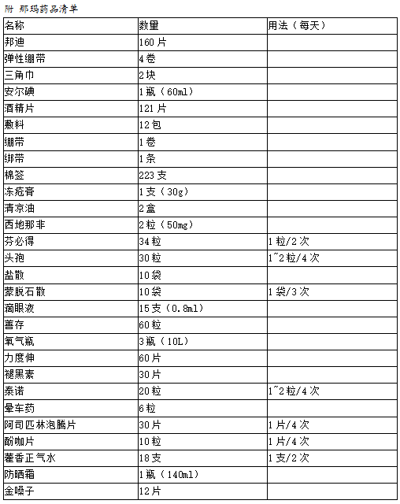
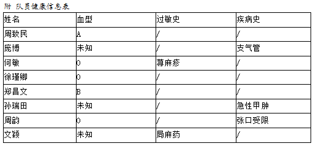
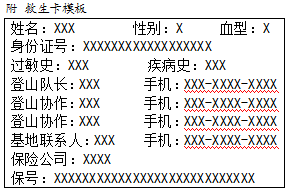
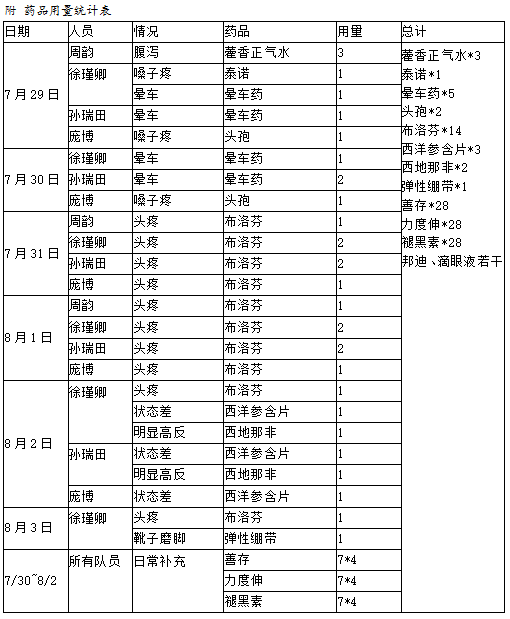
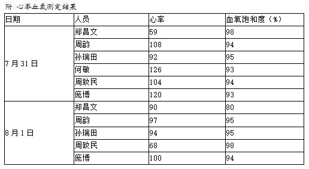
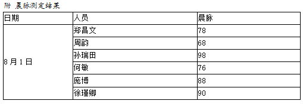

发信人: joeyinsh (papa), 信区: outdoor
标 题: 2016雪山队队医总结
发信站: 饮水思源 (2016年09月14日21:04:39 星期三)
16年登山队队医总结
一、前期工作总结
1.制订药品清单：
这次的药品由三部分组成：医疗队药品+队医自有药品+后期购买药品。医疗队药品主要包
括吸收了15年队医经验的巨量创可贴、莫名其妙失踪后又出现的两粒西地那非、少量外伤
处理用品以及头孢、布洛芬和一些常用药。我自己有云南白药喷雾、云南白药止血粉、红
霉素软膏、藿香正气水，想着没什么大用但可能有点作用也就带上了。经过统计之后，后
期又补充购买了所需营养补充剂、外伤处理用品、预防和改善高反的药品、感冒药、晕车
药及防晒霜。药品清单见附表。
 screen.width - 200){this.width = screen.width - 200}">
2.统计队员身体状况：
这个调查首先是为了了解队员是否有不宜高原户外运动的疾病史，另外也统计血型、过敏
史等急救时所需的重要信息。有些队员不知道自己血型的，去体检的时候建议顺便查一下
，毕竟这个在日常急救时也是用得到的。队员健康信息见附表。
 screen.width - 200){this.width = screen.width - 200}">
3.制作救生卡：
根据上述健康状况信息，加上各重要联系人的联系方式和保险信息制作救生卡。这个我就
自己打印去塑封了一下，保证防水防污就可以了。救生卡模板见附表。
 screen.width - 200){this.width = screen.width - 200}">
4.其他
主要就是关心妹子们的例假情况。此项有比较重大的失误，详见后文tips。
二、登山状况总结
1.用药情况：
药品在携带时分作三个部分。一是创可贴、一次性滴眼液，这种自己需要就随时使用的我
将其分到了每个人自己包里。二是所有外用类，存放在孙瑞田包里。三是所有的内用类，
存放在庞博包里。药品用量统计表见附表。
 screen.width - 200){this.width = screen.width - 200}">
2.心率血氧测定：
在7/31到达BC和8/1到达C1这两天测定了部分队员的心率和血氧饱和度。这个项目呢说实话
觉得意义有限，设备嘛就是手机+app，感觉精确度不是太高，如果真的要起到一定指标作
用的话还是需要更专业些的设备。在此列出测了的队员的数据以备参考。心率血氧测定数
据见附表。
 screen.width - 200){this.width = screen.width - 200}">
3.晨脉测定：
晨脉可以反映队员的身体状态，但关于这方面其实应该从训练时就开始记录，以后可以改
进，作为对队员身体状况变化的检测。8/1早晨进行了晨脉测定，记录了部分队员的数据。
晨脉测定结果见附表。
 screen.width - 200){this.width = screen.width - 200}">
4.比较重要的状况：
孙瑞田和徐瑾卿出现了比较明显的高反症状，并且在冲顶后下撤的路上体力不支，最后在
协作和老队员的全力关爱之下得以安全下撤。这个也有点话想说详见后文tips。
三、注意事项
这一条就是所有我想说的零零碎碎的话了，按照整个过程中发生的各种状况，算留下一些
经验给以后的登山队队医参考吧。
1.预防受伤和疾病：
大家知道此次登山队是出发前就减员了的，文颖同志出师未捷身先死，精神可嘉结局可惜
。先是不幸扁桃体周围蜂窝织炎又不幸误诊拖延了治疗缺席了几次体能训练，后因肺炎引
起肺不张这种比较严重的并发症而绝对不能上高原。梆梆梆，敲黑板看重点，这种肺有问
题的绝对绝对不能继续参加高原登山活动，高原肺水肿的危险是要用生命代价去承受的。
虽然文颖这病来得蹊跷不可预测，但是大家还是平时要关注自己的身体，注意防病，主要
是感冒。另外在训练中要严防受伤，热身要充分，需要的话护具也可以用上。
2.关于例假：
敲黑板又是一个重点，考虑到大姨妈对身体状态的影响和高原的特殊环境，一定要吃药调
周期，注意是吃药。这次一共有三个妹子，我选择吃药，文颖选择去医院打黄体酮，徐瑾
卿说大姨妈跟登山不冲突。然而，文颖打的黄体酮并没有起作用，而徐瑾卿在出发前再次
计算得出结论会冲突并且她真的在冲顶那天来了个大姨妈，这也很大程度成为了她当天体
力不支的原因。所以为了稳妥起见我强烈建议妹子通过口服避孕药的方式调节经期，折断
大姨妈作乱的小翅膀。吃药要从登山前两三个月就开始计算，药物有妈富隆、欣妈富隆、
优思明等，具体服药方式详见药品说明书。
3.注意饮食：
上山前尽量吃的清淡一点避免腹泻，腹泻一天绝对的整个人都要虚掉的，对就是我。加上
有的人本身就容易水土不服，饮食上再不加控制的话对身体影响还是蛮大的。
4.关于药品：
从消耗来看晕车药和布洛芬还需要增加一些。因为从成都到上子梅村全都是大巴了而且最
后一段又是非常破旧的山路，晕车的状况也会出现的比较多，特别是要关照平常就会晕车
的队员。布洛芬是一种非常好用的药物，感冒发烧头疼脑热什么都能用，当然它最主要的
作用还是用来缓解高反造成的头痛，这也是此次消耗比较大的原因。个人是觉得这种短期
服用没什么副作用又可以让自己舒服很多的止痛片还是很实用的。本次用掉了两粒去年留
下来的西地那非，从此协会就没有这种邪恶的药品了XD。像这种出现高反之后用来缓解高
反的药品，在前期买药的时候发现利尿剂和乙酰唑胺的管控非常严格，事实上不用处方能
买到的就只有西地那非俗称万艾可这一种药。另外氧气瓶这个东西，本次购买了三瓶14L并
且背了两瓶到了C1，但是最关键的冲顶一天没有背上去，或许带上去给队员用了状况会改
善一点，这里是我的失误。还有就是我这次给队员吃了西洋参含片希望可以起到补气的作
用，然而事实是这个含片诡异的味道直接把队员给吃吐了，所以以后要带还是带西洋参的
切片吧。
5.补充营养和水分：
增加维生素和水分这是预防高反非常重要的手段。这次的话是买了善存片和力度伸泡腾片
来增加维生素摄取。到达营地之后也会专门有队员给大家烧水，保证了每个人保温杯里随
时有热水。在晚饭后要分发营养剂到每个人手中并督促大家服用。另外此次还准备了褪黑
素维B片在睡前半小时服用，据说可以改善睡眠。然而因为缺氧有点厉害加上睡袋实在太热
了，可能直接超出了褪黑素助睡眠的能力范围了吧摊手。
6.高反和体力不支：
来来来继续敲黑板。刚才说了这次有两名队员出现了比较严重的状况，具体情况也不多说
了。我作为队医主要说两点，第一我希望以后的队伍不可以再出现上山之后体力不支无法
自行下撤的情况，所以希望队医可以成为一个坚定的保守意见者，在发现队员身体状况比
较差可能不能继续上升时坚决提出下撤或不参与冲顶的建议。二是给所有队员的话，珍爱
自己和别人的生命，不要存侥幸心理，我理解对登上顶峰的渴望，但首先要保证自己有安
全回来的体力。山永远都存在，自己的安全最重要。
7.其他：
还有一些细节就比如衣服要塞到裤子里防止灌风，帽子一定要戴好不然容易头痛，必须戴
雪镜防止雪盲，还有高山靴鞋带要绑紧之类的，总之自己怎么小心都不为过啦。防晒霜是
肯定要用的，至少SPF50以上，这次买的是妮维雅，好用便宜大碗呢至少下一年登山队还可
以用。另外建议带上护手霜和唇膏防止手唇开裂，以上。
========================================>>>>>
word版：
http://bbs.sjtu.edu.cn../htm/pics/147385825923590.docx
--
※ 来源:·饮水思源 bbs.sjtu.edu.cn·[FROM: 101.224.203.61]
|